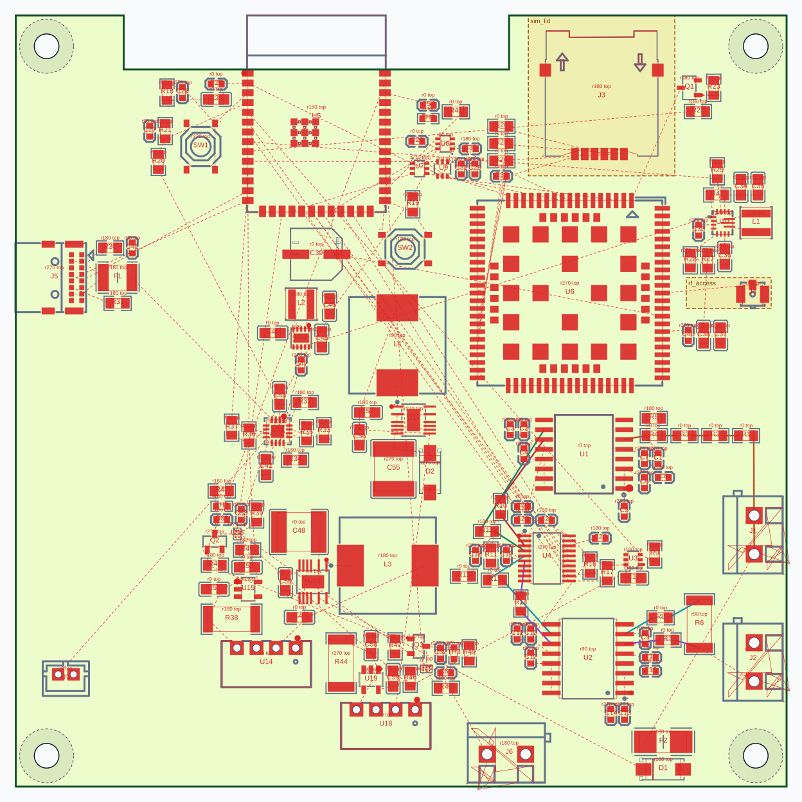
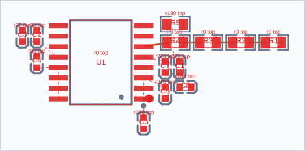
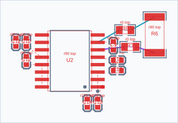
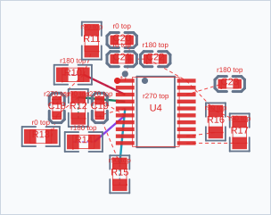
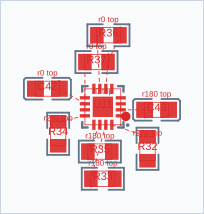
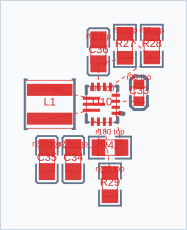
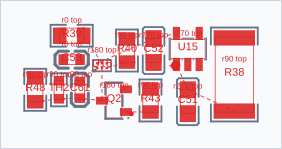

Полная плата
| Показатель | До | После |
|---|---|---|
| MST, мм | 2392.86 | 2392.86 |
| Пересечения линий | 299 | 299 |
| Чужие пады | 296 | 296 |
| Площадь, мм² | 9905.17 | 9905.17 |


До: 701.0 с. После: 476.1 с. Изменено позиций: 0. Проверка размещения: true.
Все гипотезы проходят beam и одиночные перемещения. Парный поиск продолжают не более двух электрически сопоставимых вариантов; исходные checkpoints сохраняются. Близкие состояния пропускают повторный post-refine при совпадающих поворотах, группах, смещении до 0,15 мм и малой разнице электрических показателей. Их точные исходные оценки не заменяются приблизительным кешем.
Оба замера — полные расчёты на одной машине с шестью native-потоками. Фоновая нагрузка не контролировалась; прирост основан на одном запуске каждого варианта. Время включает захват диагностики, но исключает SVG/HTML.
| Показатель | До | После |
|---|---|---|
| MST, мм | 2392.86 | 2392.86 |
| Пересечения линий | 299 | 299 |
| Чужие пады | 296 | 296 |
| Площадь, мм² | 9905.17 | 9905.17 |

Общая оценка блока: 5664.14 → 5664.14. Электрическая: 5458.62 → 5458.62.
| Показатель | До | После |
|---|---|---|
| MST, мм | 39.16 | 39.16 |
| Пересечения линий | 0 | 0 |
| Чужие пады | 0 | 0 |
| Площадь, мм² | 475.83 | 475.83 |


Общая оценка блока: 11877.63 → 11877.63. Электрическая: 11672.66 → 11672.66.
| Показатель | До | После |
|---|---|---|
| MST, мм | 35.2 | 35.2 |
| Пересечения линий | 0 | 0 |
| Чужие пады | 0 | 0 |
| Площадь, мм² | 449.31 | 449.31 |


Общая оценка блока: 12714.12 → 12714.12. Электрическая: 12475.68 → 12475.68.
| Показатель | До | После |
|---|---|---|
| MST, мм | 60.42 | 60.42 |
| Пересечения линий | 3 | 3 |
| Чужие пады | 4 | 4 |
| Площадь, мм² | 345.19 | 345.19 |


Общая оценка блока: 2684.54 → 2684.54. Электрическая: 2578.26 → 2578.26.
| Показатель | До | После |
|---|---|---|
| MST, мм | 30.19 | 30.19 |
| Пересечения линий | 0 | 0 |
| Чужие пады | 0 | 0 |
| Площадь, мм² | 180.93 | 180.93 |


Общая оценка блока: 6588.54 → 6588.54. Электрическая: 6498.46 → 6498.46.
| Показатель | До | После |
|---|---|---|
| MST, мм | 35.13 | 35.13 |
| Пересечения линий | 0 | 0 |
| Чужие пады | 0 | 0 |
| Площадь, мм² | 176.32 | 176.32 |


Общая оценка блока: 1691.75 → 1691.75. Электрическая: 1606.56 → 1606.56.
| Показатель | До | После |
|---|---|---|
| MST, мм | 30.2 | 30.2 |
| Пересечения линий | 1 | 1 |
| Чужие пады | 0 | 0 |
| Площадь, мм² | 165.91 | 165.91 |


Общая оценка блока: 1691.75 → 1691.75. Электрическая: 1606.56 → 1606.56.
| Показатель | До | После |
|---|---|---|
| MST, мм | 30.2 | 30.2 |
| Пересечения линий | 1 | 1 |
| Чужие пады | 0 | 0 |
| Площадь, мм² | 165.91 | 165.91 |
tree:block:usb_input: Staged block search: 1 beam/singles hypotheses; 1 selected for pairs; 1 duplicate/near-duplicate postrefine calls skipped (0.15 mm pose, tight electrical gates). Originals retained.
tree:block:mechanic_J5: Staged block search: 2 beam/singles hypotheses; 1 selected for pairs; 2 duplicate/near-duplicate postrefine calls skipped (0.15 mm pose, tight electrical gates). Originals retained.
tree:block:esp_supply: Staged block search: 2 beam/singles hypotheses; 1 selected for pairs; 3 duplicate/near-duplicate postrefine calls skipped (0.15 mm pose, tight electrical gates). Originals retained.
tree:block:lte: Staged block search: 2 beam/singles hypotheses; 2 selected for pairs; 4 duplicate/near-duplicate postrefine calls skipped (0.15 mm pose, tight electrical gates). Originals retained.
tree:block:uart: Staged block search: 1 beam/singles hypotheses; 1 selected for pairs; 0 duplicate/near-duplicate postrefine calls skipped (0.15 mm pose, tight electrical gates). Originals retained.
tree:block:sim_support: Staged block search: 1 beam/singles hypotheses; 1 selected for pairs; 2 duplicate/near-duplicate postrefine calls skipped (0.15 mm pose, tight electrical gates). Originals retained.
tree:block:lte_power: Staged block search: 2 beam/singles hypotheses; 1 selected for pairs; 0 duplicate/near-duplicate postrefine calls skipped (0.15 mm pose, tight electrical gates). Originals retained.
tree:block:usb_charge: Staged block search: 1 beam/singles hypotheses; 1 selected for pairs; 0 duplicate/near-duplicate postrefine calls skipped (0.15 mm pose, tight electrical gates). Originals retained.
tree:block:logic_power: Staged block search: 1 beam/singles hypotheses; 1 selected for pairs; 1 duplicate/near-duplicate postrefine calls skipped (0.15 mm pose, tight electrical gates). Originals retained.
tree:block:voltage_hdc: Staged block search: 5 beam/singles hypotheses; 1 selected for pairs; 9 duplicate/near-duplicate postrefine calls skipped (0.15 mm pose, tight electrical gates). Originals retained.
tree:block:voltage_hldo: Staged block search: 5 beam/singles hypotheses; 1 selected for pairs; 9 duplicate/near-duplicate postrefine calls skipped (0.15 mm pose, tight electrical gates). Originals retained.
tree:block:voltage_secondary: Staged block search: 1 beam/singles hypotheses; 1 selected for pairs; 2 duplicate/near-duplicate postrefine calls skipped (0.15 mm pose, tight electrical gates). Originals retained.
tree:block:voltage_iso: Staged block search: 8 beam/singles hypotheses; 0 selected for pairs; 0 duplicate/near-duplicate postrefine calls skipped (0.15 mm pose, tight electrical gates). Originals retained.
tree:block:current_hdc: Staged block search: 5 beam/singles hypotheses; 1 selected for pairs; 9 duplicate/near-duplicate postrefine calls skipped (0.15 mm pose, tight electrical gates). Originals retained.
tree:block:current_hldo: Staged block search: 5 beam/singles hypotheses; 1 selected for pairs; 9 duplicate/near-duplicate postrefine calls skipped (0.15 mm pose, tight electrical gates). Originals retained.
tree:block:current_secondary: Staged block search: 1 beam/singles hypotheses; 1 selected for pairs; 2 duplicate/near-duplicate postrefine calls skipped (0.15 mm pose, tight electrical gates). Originals retained.
tree:block:current_iso: Staged block search: 8 beam/singles hypotheses; 2 selected for pairs; 0 duplicate/near-duplicate postrefine calls skipped (0.15 mm pose, tight electrical gates). Originals retained.
tree:block:adc_supply: Staged block search: 2 beam/singles hypotheses; 2 selected for pairs; 3 duplicate/near-duplicate postrefine calls skipped (0.15 mm pose, tight electrical gates). Originals retained.
tree:block:adc: Staged block search: 5 beam/singles hypotheses; 0 selected for pairs; 0 duplicate/near-duplicate postrefine calls skipped (0.15 mm pose, tight electrical gates). Originals retained.
tree:block:afe_power: Staged block search: 1 beam/singles hypotheses; 1 selected for pairs; 2 duplicate/near-duplicate postrefine calls skipped (0.15 mm pose, tight electrical gates). Originals retained.
tree:block:hv_pos: Staged block search: 6 beam/singles hypotheses; 2 selected for pairs; 12 duplicate/near-duplicate postrefine calls skipped (0.15 mm pose, tight electrical gates). Originals retained.
tree:block:low_charge_pos: Staged block search: 2 beam/singles hypotheses; 1 selected for pairs; 0 duplicate/near-duplicate postrefine calls skipped (0.15 mm pose, tight electrical gates). Originals retained.
tree:block:hv_neg: Staged block search: 5 beam/singles hypotheses; 1 selected for pairs; 8 duplicate/near-duplicate postrefine calls skipped (0.15 mm pose, tight electrical gates). Originals retained.
tree:block:low_charge_neg: Staged block search: 2 beam/singles hypotheses; 1 selected for pairs; 0 duplicate/near-duplicate postrefine calls skipped (0.15 mm pose, tight electrical gates). Originals retained.